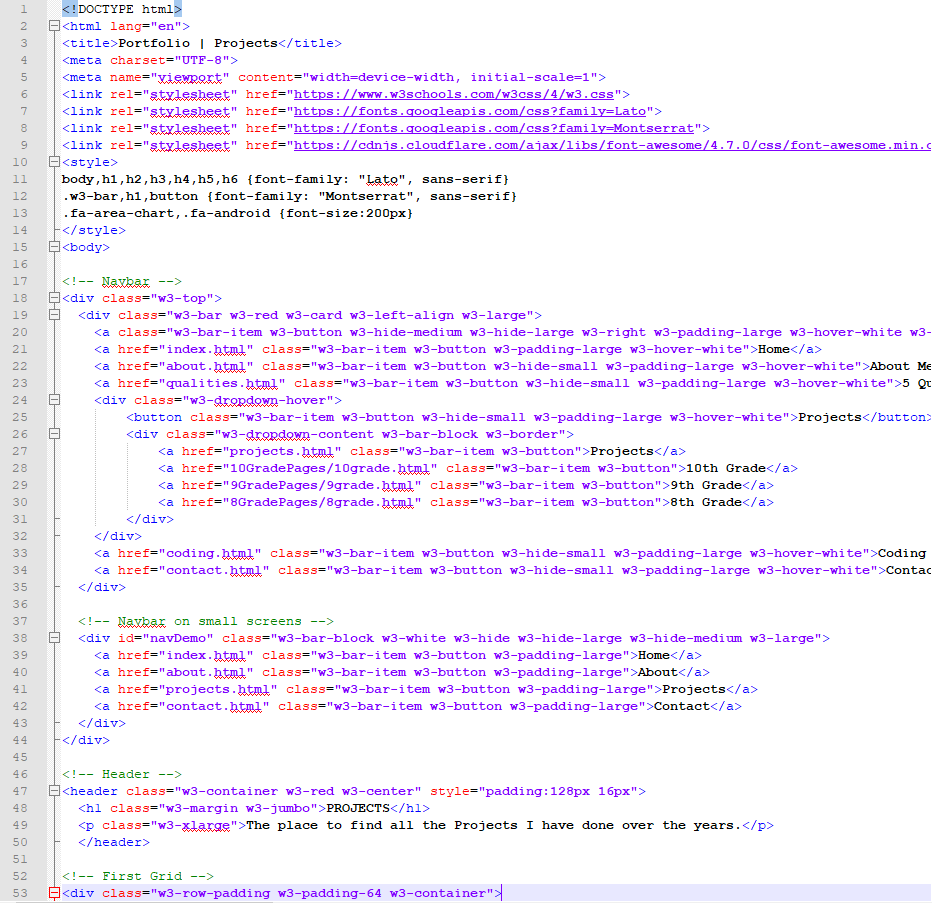
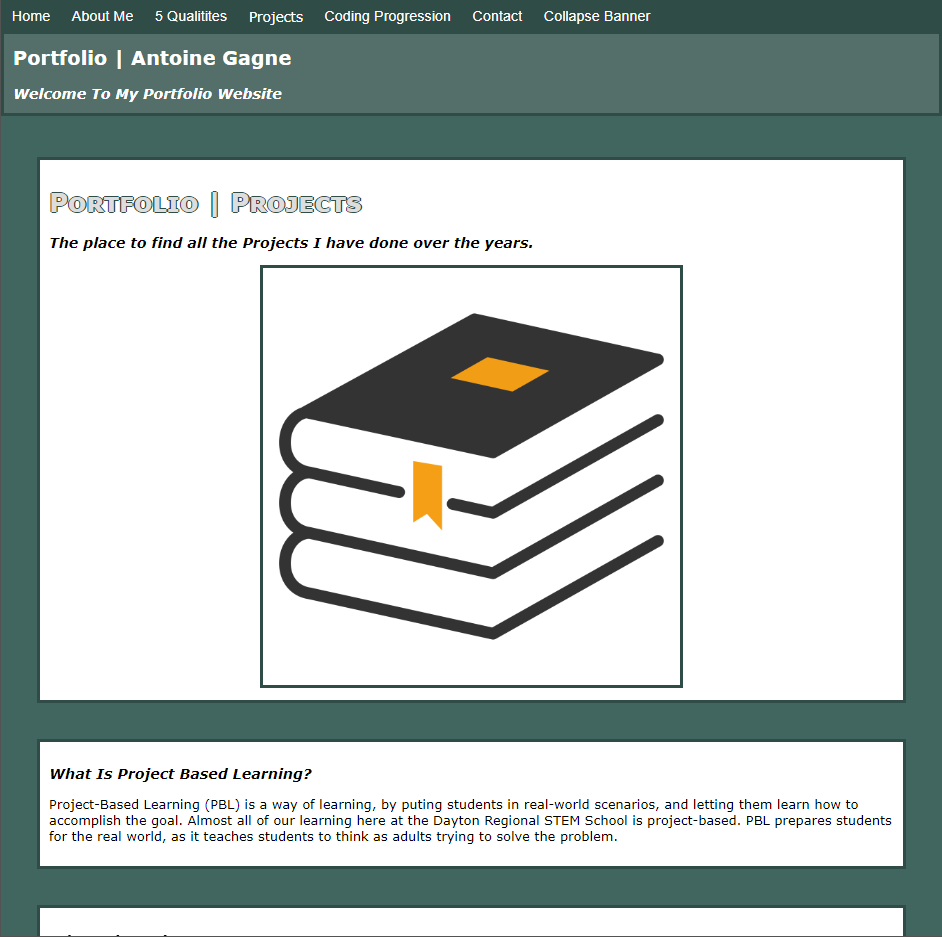
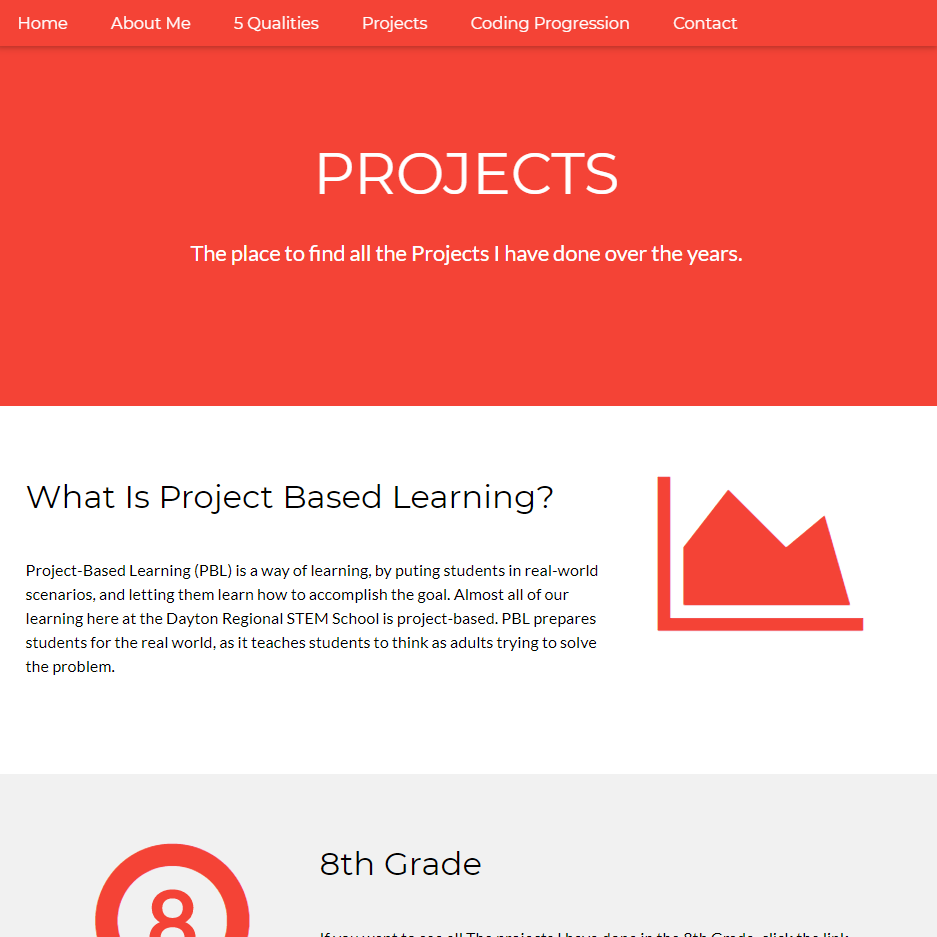
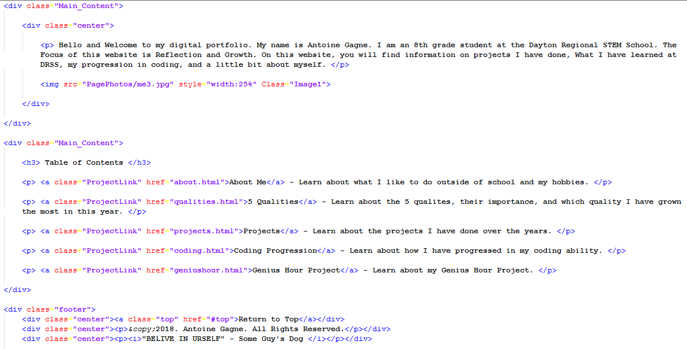
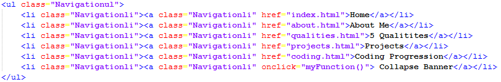
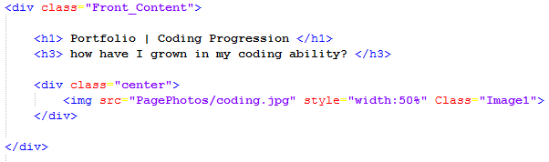
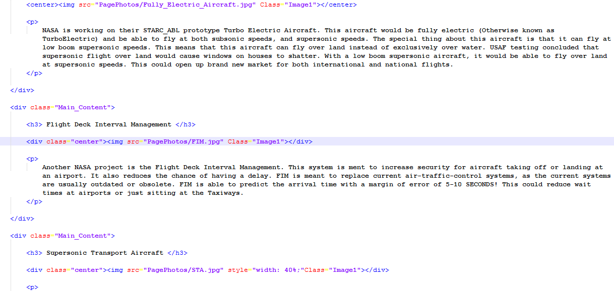
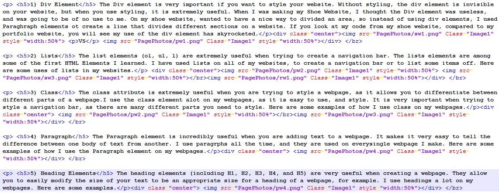

I started at the Dayton Regional STEM School in the 8th grade, so I had absolutely no idea how to code. At my previous school, they taught us very basic code in scratch, but I never really learned how to code, but more just watch a video and follow the instructions. When I first learned to code, it was kind of confusing, but eventually, it became less confusing. CSS was not very confusing to me, but many other kids were confused about CSS. I think this is because the other students were used to using inline styling, but since I did not get used to using inline CSS, it was easier for me to understand. One element that too me a while to understand its true power was the Div element. I did not use a lot of Div's on my Shoe website, as I believed they were useless, but once it was time to start our portfolio, I realized how useful Div's were. The Div element really helped me make my website to be more professional.



A Slideshow Showing the Progression of My Portfolio Over Time
New Elements I learned This Year
I learned many new elements this year, and these elements have been the most helpful to me while creating my Shoe Website, Raptors, and Portfolio Website.
1) The Div Element
The Div element is very important if you want to style your website. Without styling, the div element is invisible on your website, but when you use styling, it is extremely useful. When I was making my Shoe Website, I thought the Div element was useless, and was going to be of no use to me. On my shoe website, wanted to have a nice way to divided an area, so instead of using div elements, I used Paraghraph elements ot create a line that divides different sections on a website. If you look at my code from my shoe website, compared to my portfolio website, you will see my use of the div element has skyrocketed.

2) The List Elements
The list elements (ol, ul, l) are extremely useful when trying to create a navigation bar. The lists elements are among some of the first HTML Elements I learned. I have used Lists on all of my websites, to create a navigation bar or to list some items off. Here are some uses of lists in my websites.

3) The Class Element
The class attribute is extremely useful when you are trying to style a webpage, as it allows you to differentiate between different parts of a webpage.I use the class element alot on my webpages, as it is easy to use, and style. It is very important when trying to style a navigation bar, as there are many different parts you need to style. Here are some examples of how I use class on my webpages.

4) The Paragraph Element
The Paragraph element is incredibly useful when you are adding text to a webpage. It makes it very easy to tell the difference between one body of text from another. I use paragrphs all the time, and they are used on everysingle webpage I make. Here are some examples of how I use the Paragraph element on my webpages.

5) The Heading Elements
The heading elements (including H1, H2, H3, H4, and H5) are very useful when creating a webpage. They allow you to easily modify the size of your text to be an appropriate size for a heading of a webpage, for example. I use headings a lot on my webpages. Here are some examples.

Quote of the day: "Don’t quote me on that" – Raleigh Tutt